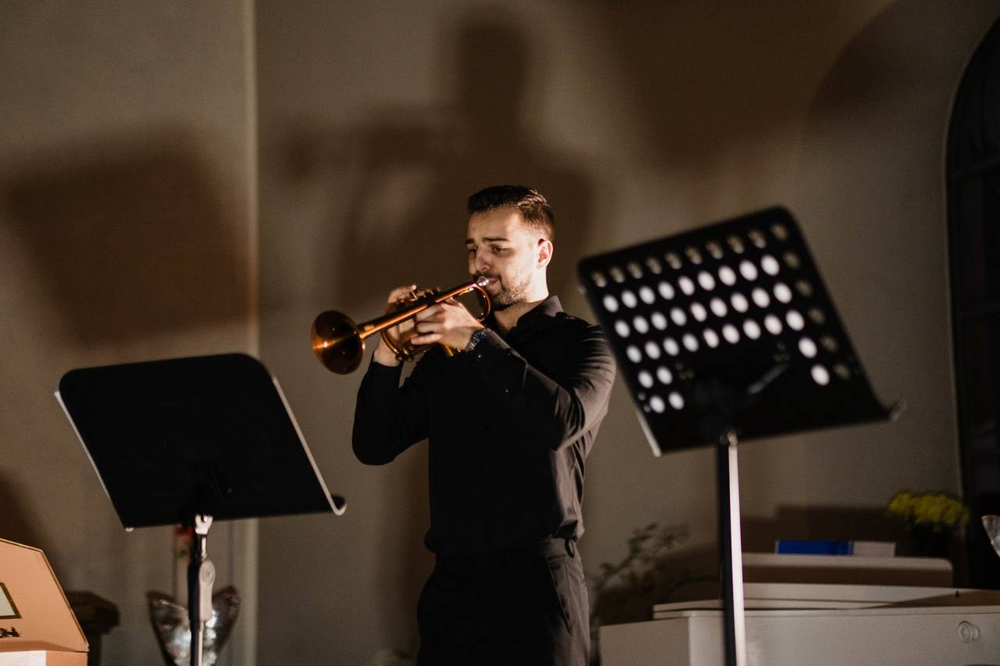
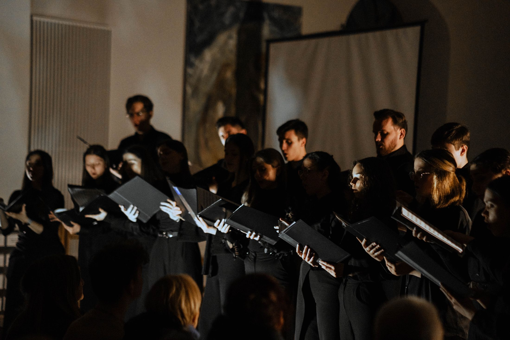
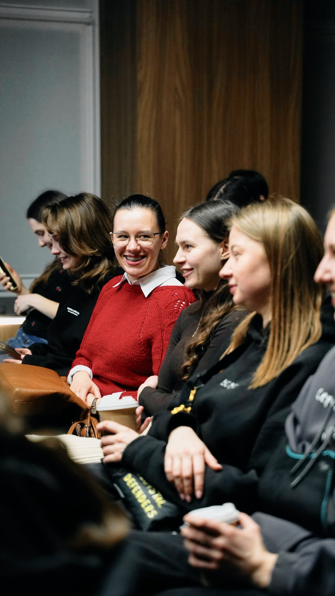
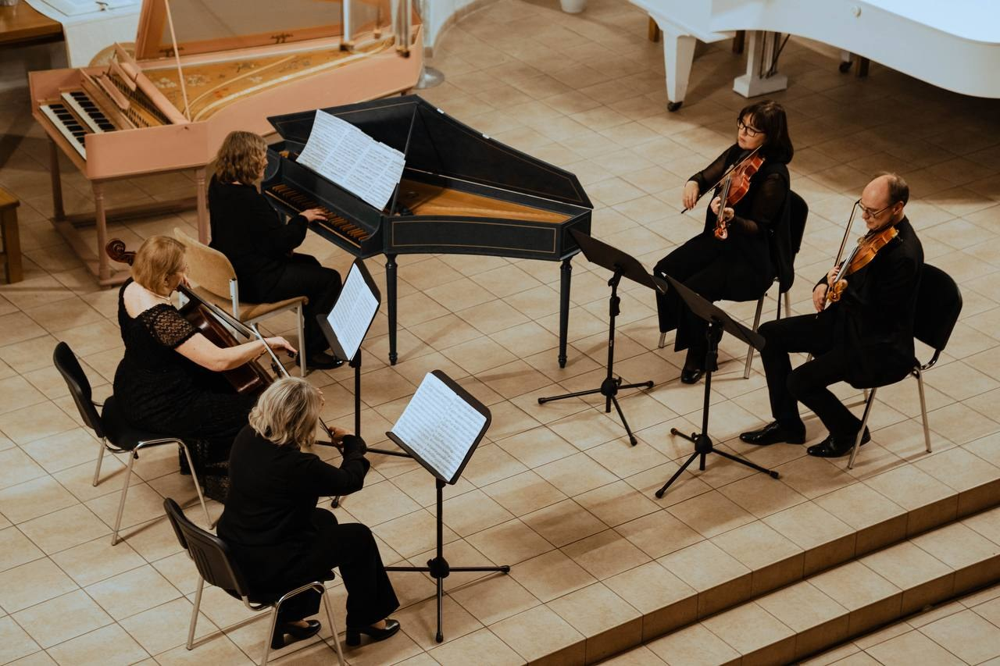
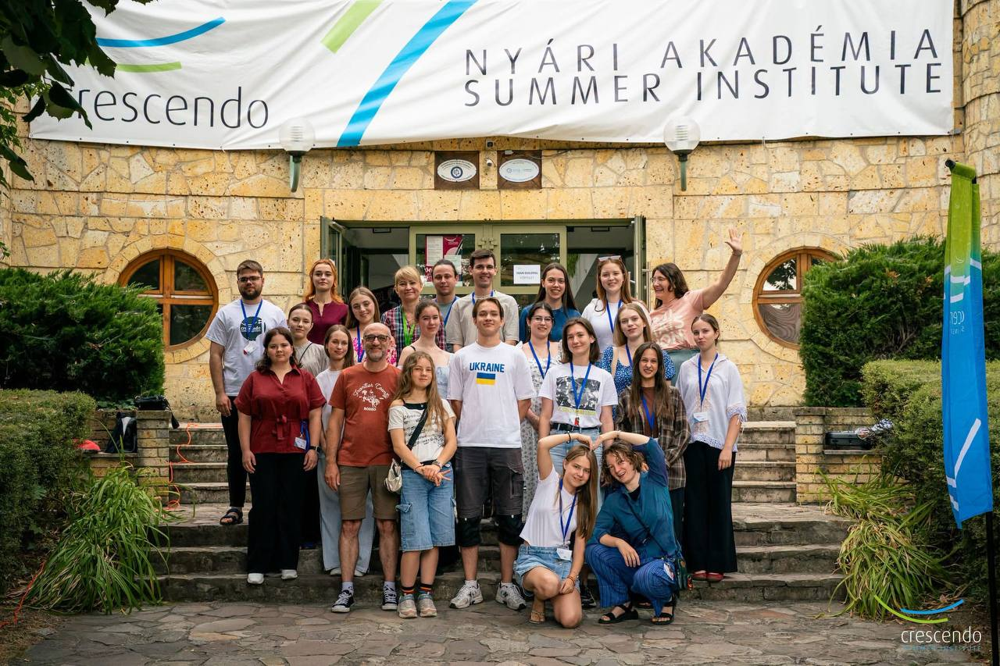
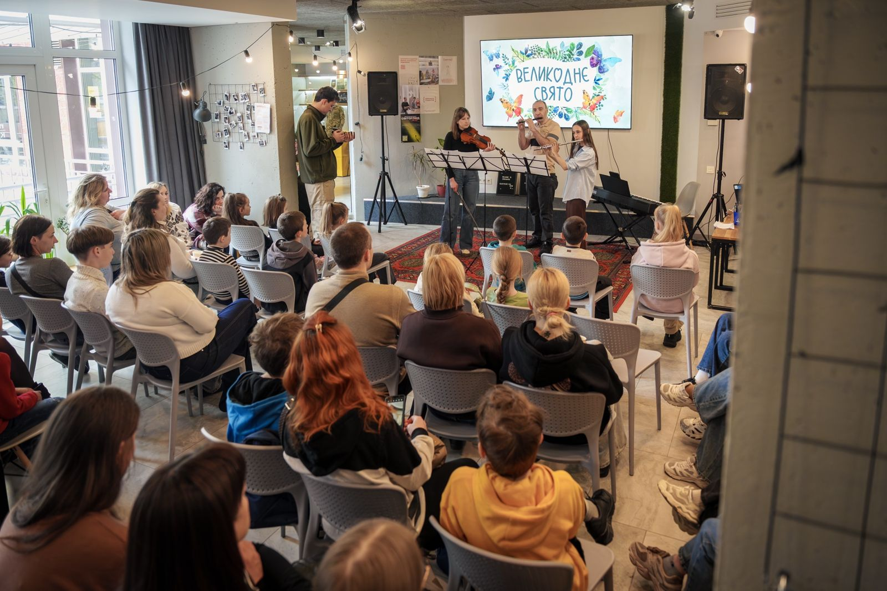
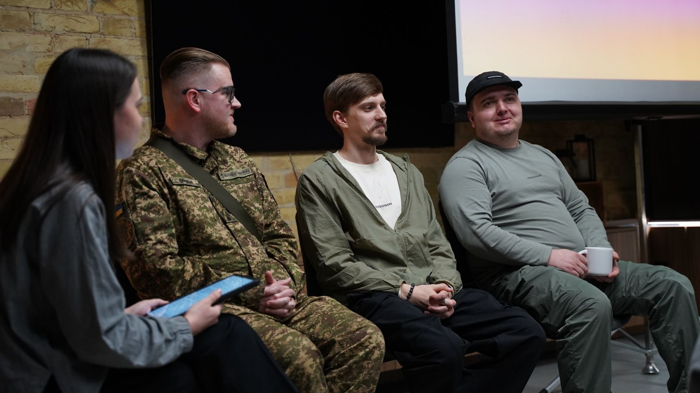
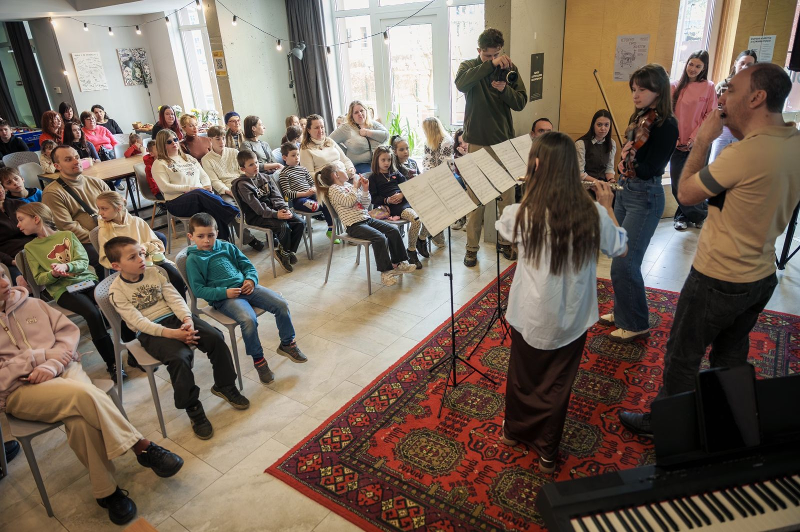
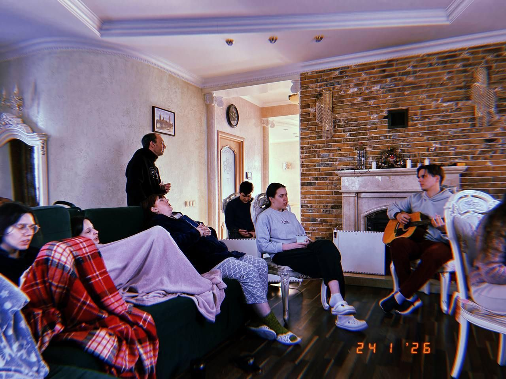

Професійний розвиток
Майстеркласи, лекції, воркшопи, концерти, дискусії й міжнародне навчання. Допомагаємо розширювати горизонти, знаходити контакти й сміливіше втілювати творчі ідеї.

Crescendo Ukraine є частиною міжнародного руху Crescendo International, який з 1985 року об'єднує музикантів, студентів, викладачів, диригентів і композиторів. В Україні спільноту заснувала Анастасія Опришко 6 квітня 2021 року. Ми працюємо насамперед із музикантами академічної сфери: студентами музичних академій, солістами, оркестрантами, диригентами, композиторами, музикознавцями й викладачами.
За кожним концертом, репетицією чи конкурсом стоїть людина зі своїми запитаннями, переживаннями й мріями. Музична професія вимагає виняткової дисципліни, років підготовки й психологічної витривалості. А професійне середовище часто буває конкурентним і не лишає місця для вразливості, відпочинку чи розмов поза музикою.
Тому ми будуємо спільноту, де майстерність поєднується з людяністю, співпрацею й турботою.
Наша діяльність базується на християнському світогляді. Водночас ми відкриті до музикантів із різними переконаннями: для участі в більшості подій не потрібно бути християнином. Crescendo є місцем, де можна ставити складні запитання, чесно говорити, не боятися відмінностей і бути почутим.
Допомагати професійним музикантам зростати як митцям і особистостям, відкривати глибший сенс свого покликання й формувати живу спільноту.

Майстеркласи, лекції, воркшопи, концерти, дискусії й міжнародне навчання. Допомагаємо розширювати горизонти, знаходити контакти й сміливіше втілювати творчі ідеї.

Спільнота, де знаходять друзів, однодумців і партнерів для проєктів. Підтримка замість ізоляції, співпраця замість суперництва, повага до людини, а не лише до її досягнень.

Досліджуємо питання сенсу, віри, ідентичності й покликання через біблійні тексти, християнську думку й духовну спадщину мистецтва. У діалозі й з повагою до свободи кожного.
Творчість є серцем нашої діяльності. Як музиканти, ми творимо й мислимо творчо в усьому, відображаючи Творця й приносячи у світ красу. Креативність для нас означає сміливість пробувати нове й не боятися живого процесу.
Ми будуємо спільноту поваги й підтримки. Обираємо людяність, гідність і відкритість, щоб у цьому просторі хотілося бути.
Зростаємо як музиканти й як особистості: у майстерності, в усвідомленому світогляді й у стосунках.
Служимо музикантам і залучаємо спільноту до дії. Разом відповідаємо на потреби суспільства, використовуючи музику як інструмент підтримки й впливу.
 01
01
Творчий простір у центрі Києва, де професійні музиканти й студенти безкоштовно займаються, репетирують і зустрічаються з колегами. Працює з жовтня 2023 року.
Тут знайомляться, обмінюються досвідом, шукають партнерів для ансамблів, слухають музику й дискутують. А ще в HUB проходять творчі зустрічі, лекції, майстеркласи, менторські програми й чаювання.
Що можна робити в HUB
Простір призначений для професійної музичної діяльності, комерційних уроків тут немає. Заняття за попереднім погодженням із командою. Адреса: Київ, вул. Саксаганського, 22Б.
Сайт HUB
02Музика об'єднує нас професійно, а спільнота допомагає залишатися людьми. Регулярні події, щоб вийти з ритму репетицій, навчання, дедлайнів і концертів.
Чай
Неформальні зустрічі за чаєм. Кожна зустріч має тему для розмови. Наприклад: «Нудний і нудьгуючий: для чого творчості нудьга», «На захист потворного» (за Г. К. Честертоном), «Як стати Бахом?».
Для нас це не другорядна частина роботи, а важливий спосіб будувати довіру й справжні стосунки.
Творчість як спосіб відновлення
Настільні ігри, спільні обіди, міждисциплінарні майстерні про зв'язок музики й візуального мистецтва, кольору й звуку. Такі зустрічі повертають до творчості як до джерела радості, цікавості й натхнення.
Дискусійний формат, у якому ми досліджуємо біблійні історії через музику, живопис, історію та сучасний людський досвід.
Біблійні тексти століттями надихали композиторів, художників і письменників: на них написано опери, ораторії, симфонії, картини. Чому ці сюжети досі хвилюють митців і що вони кажуть людині сьогодні?
Ми розглядаємо історію з різних боків: історичного, мистецького, філософського й богословського. Слухаємо музику, аналізуємо живопис і відкрито дискутуємо. Наприклад, історія Каїна й Авеля говорить про заздрість, порівняння, відповідальність і свободу вибору, а притча про блудного сина про любов, справедливість, прощення й повернення.
Для кого
Для музикантів із різними світоглядами. Знати Біблію чи мати певні переконання не потрібно. Запрошуємо до чесної розмови, де є місце для різних тлумачень, запитань і сумнівів. Окремо говоримо про те, що близьке музикантам: ідентичність, покликання, амбіції, конкуренцію, стосунки й сенс праці.

04Мистецтво як простір зустрічі, діалогу та спільного переживання.
Ми робимо концерти, у яких висока якість виконання поєднується з продуманою ідеєю та увагою до слухача.
Для нас концерт не лише показ результату, а й спосіб говорити з людьми мовою мистецтва. Музика може ставати мовою пам'яті, скорботи, надії, вдячності й пошуку сенсу. Тому ми любимо програми, які розкривають історичний, культурний, філософський чи духовний контекст творів, щоб слухач не був лише глядачем, а глибше осмислював почуте.
З ким ми співпрацюємо
Ми відкриті до спільних концертів, тематичних програм, освітніх проєктів і нових форматів. Наша мета: мережа професійних стосунків, яка відкриває нові можливості для українських музикантів.
 05
05
Міжнародний мистецько-духовний формат Crescendo, у якому митці осмислюють християнську віру засобами мистецтва. Існує з 1995 року.
У церкві мистецтво часто лише допомагає: музика супроводжує спів, картина ілюструє біблійний сюжет. У Creative Church мистецтво стає повноцінною мовою, через яку досліджують духовні питання, переживають біблійні історії й відкривають нові виміри віри.
Кожна подія будується навколо однієї теми. Її розкривають музика, живопис, література, театр чи танець, а також біблійні роздуми й особиста рефлексія. Події проходили в десятках міст разом із церквами різних конфесій.
Формат має християнську основу, але відкритий і для тих, хто не належить до церкви. Для когось це нагода по-новому пережити знайомі історії, для когось перше знайомство з християнською традицією, для інших простір подумати про надію, справедливість, страждання й людську гідність. Однакових переконань від учасників ми не чекаємо.
Creative Church також поєднує професійних митців і церковні спільноти й показує, що мистецтво й віра не конкурують, а поглиблюють одне одного.
 06
06
Освітні формати, які доповнюють музичну освіту: від лекцій до практичних воркшопів і відкритих розмов із професіоналами.
Сучасному митцю важливо розуміти культурні процеси, вміти комунікувати, керувати проєктами, шукати фінансування й співпрацювати.
Лекції та TED-style talks
Музиканти, дослідники, культурні менеджери, богослови й інші фахівці говорять про мистецтво, культуру, творчість, етику, філософію, психологію й духовність. Так, щоб спонукати думати й ставити запитання.
Майстеркласи й воркшопи
Грантовий менеджмент, планування мистецьких проєктів, творча комунікація, міждисциплінарна співпраця. Наприклад, як перетворити ідею на реальний проєкт, знайти фінансування й написати заявку.
Панельні дискусії
Розмови з диригентами, виконавцями й керівниками колективів про кар'єру, роботу в оркестрі, лідерство, стосунки в колективі й виклики професії. Особливо цінуємо прямий діалог молодих музикантів із досвідченими.
Міждисциплінарні зустрічі
Музика в діалозі з іншими мистецтвами, філософією, історією та суспільством. Щоб виходити за межі своєї спеціалізації й розширювати кругозір.
 07
07
Безкоштовні менторські програми для музикантів, студентів і викладачів. Хто я поза професією? Що визначає мою цінність? На чому я будую життя?
Музична освіта багато дає для техніки й майстерності, але не завжди допомагає зрозуміти себе, свої пріоритети, стосунки й покликання. Менторство дає змогу зупинитися й разом із наставником подивитися на своє життя ширше.
ЯХТО: пізнати себе
Програма самопізнання: що мене формує, що для мене справді важливо, які мої сильні сторони, як я ухвалюю рішення і якою людиною хочу бути. Для музикантів це особливо важливо, адже їхня ідентичність часто складається з дитинства навколо інструмента.
Бути собою
Проєкт про ідентичність, цінності й світогляд. У мистецькому середовищі людину постійно оцінюють і порівнюють, тож тут ми досліджуємо, на чому тримається самосприйняття і з чого складаються власні цінності. Робота з ментором іде в діалозі, зокрема й про духовний вимір життя.

08Два тижні музики, навчання й міжнародних знайомств в Угорщині. Щороку близько 20 українських студентів і молодих музикантів їдуть на інститут.
Щорічна освітня програма Crescendo International, заснована 2004 року. Учасники працюють із професорами музичних академій, солістами й музикантами провідних оркестрів: індивідуальні заняття, майстеркласи, камерна й оркестрова музика, вокал, опера, барокова музика, концерти. У 2025 році тут було близько 300 учасників із приблизно 30 країн.
Поряд із музикою є лекції, зустрічі в малих групах і розмови про професійну ідентичність, цінності, психологічне благополуччя й духовне життя, а також ранкові зустрічі Tune In. Інститут має християнську основу, але відкритий для всіх професійно підготовлених музикантів. Участь у духовних активностях добровільна.
Для нас важливо, щоб українські музиканти навіть під час війни не втрачали міжнародного навчання, представляли українську культуру й поверталися додому з новим досвідом: через концерти, викладання й нові проєкти.
Сайт інституту











Оберіть зручний для вас формат участі — від щоденної практики до дружнього вечірнього спілкування.
Зали відчинені для студентів-музикантів. Забронюйте час для індивідуальних чи ансамблевих репетицій.
Забронювати залЧай, «СЮЖЕТ», лекції, концерти й Creative Church. Анонси найближчих подій публікуємо в Instagram.
Дивитися анонсиКоманда розвиває музичний майданчик, і кожен інструмент відкриває нові можливості для молодих талановитих музикантів України.
Підтримати розвиток HubЯкщо ви студент, викладач або професійний музикант, напишіть нам в Instagram або завітайте до нас на Саксаганського, 22Б.
Лідерка Crescendo Ukraine